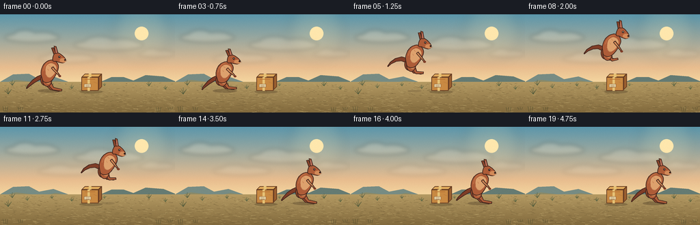
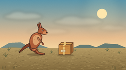
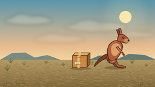
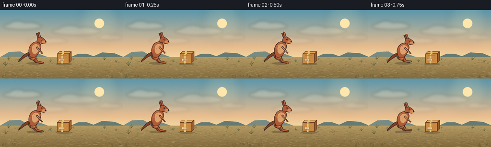
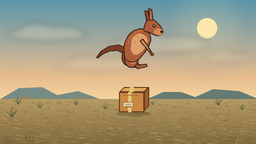
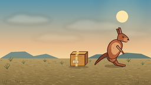
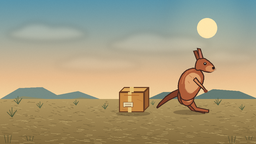
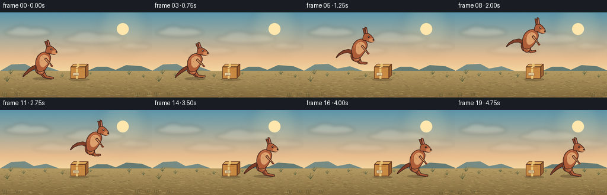

CODING AGENTS AS PIXEL WORLD MODELS
traex/DeepSeek-V4.1-Flash · dynamic_spatial_relationship_0032
点击播放 · 原生 RGB 像素
逐轮保存的候选
回放视频、检查图与代码变化。
每份候选均可单独播放。实际图片检查记录在下方工具轨迹中。
候选 01播放与检查图
点击播放 · 原生 RGB 像素

展开代码变化
--- 上一保存版本
+++ 本次保存版本
@@ -0,0 +1,438 @@
+from pathlib import Path
+import math
+
+import numpy as np
+from PIL import Image, ImageDraw, ImageFilter
+
+import artifact_io
+
+
+CASE_DIR = Path(__file__).resolve().parent
+WIDTH, HEIGHT = 256, 144
+FRAMES = 20
+FPS = 4.0
+S = 4
+W, H = WIDTH * S, HEIGHT * S
+RNG = np.random.default_rng(32)
+
+
+def rgb(hex_value):
+ hex_value = hex_value.lstrip("#")
+ return tuple(int(hex_value[i:i + 2], 16) for i in (0, 2, 4))
+
+
+SKY_TOP = rgb("5b96ab")
+SKY_MID = rgb("e8bd8f")
+SKY_LOW = rgb("f5d7a0")
+GROUND_TOP = rgb("b49a63")
+GROUND_LOW = rgb("826a3d")
+
+
+def lerp_color(a, b, t):
+ return tuple(int(round(a[i] * (1.0 - t) + b[i] * t)) for i in range(3))
+
+
+def gradient_band(draw, y0, y1, c0, c1):
+ for y in range(y0, y1):
+ t = (y - y0) / max(1, y1 - y0 - 1)
+ draw.line((0, y, W, y), fill=lerp_color(c0, c1, t))
+
+
+def smooth_closed(points, samples=10):
+ pts = np.asarray(points, dtype=float)
+ result = []
+ count = len(pts)
+ for i in range(count):
+ p0, p1 = pts[(i - 1) % count], pts[i]
+ p2, p3 = pts[(i + 1) % count], pts[(i + 2) % count]
+ for t in np.linspace(0.0, 1.0, samples, endpoint=False):
+ t2, t3 = t * t, t * t * t
+ q = 0.5 * (
+ 2.0 * p1
+ + (-p0 + p2) * t
+ + (2.0 * p0 - 5.0 * p1 + 4.0 * p2 - p3) * t2
+ + (-p0 + 3.0 * p1 - 3.0 * p2 + p3) * t3
+ )
+ result.append(tuple(q))
+ return result
+
+
+def bezier(points, samples=24):
+ p = np.asarray(points, dtype=float)
+ out = []
+ for t in np.linspace(0.0, 1.0, samples):
+ q = ((1 - t) ** 3) * p[0] + 3 * ((1 - t) ** 2) * t * p[1]
+ q += 3 * (1 - t) * t * t * p[2] + (t ** 3) * p[3]
+ out.append(tuple(q))
+ return out
+
+
+def tube_polygon(points, widths):
+ pts = np.asarray(points, dtype=float)
+ widths = np.asarray(widths, dtype=float)
+ tangents = np.empty_like(pts)
+ tangents[0] = pts[1] - pts[0]
+ tangents[-1] = pts[-1] - pts[-2]
+ tangents[1:-1] = pts[2:] - pts[:-2]
+ lengths = np.linalg.norm(tangents, axis=1)
+ tangents /= np.maximum(lengths[:, None], 1e-5)
+ normals = np.column_stack((-tangents[:, 1], tangents[:, 0]))
+ left = pts + normals * widths[:, None] * 0.5
+ right = pts - normals * widths[:, None] * 0.5
+ return [tuple(p) for p in left] + [tuple(p) for p in right[::-1]]
+
+
+def draw_background():
+ image = Image.new("RGB", (W, H), SKY_TOP)
+ draw = ImageDraw.Draw(image)
+ sky_mid_y = int(H * 0.54)
+ sky_low_y = int(H * 0.70)
+ gradient_band(draw, 0, sky_mid_y, SKY_TOP, SKY_MID)
+ gradient_band(draw, sky_mid_y, sky_low_y, SKY_MID, SKY_LOW)
+
+ glow = Image.new("RGBA", (W, H), (0, 0, 0, 0))
+ gd = ImageDraw.Draw(glow)
+ sun_x, sun_y = int(207 * S), int(28 * S)
+ for radius, alpha in ((42, 18), (31, 24), (22, 32), (15, 42)):
+ rr = radius * S
+ gd.ellipse((sun_x - rr, sun_y - rr, sun_x + rr, sun_y + rr), fill=(255, 235, 178, alpha))
+ glow = glow.filter(ImageFilter.GaussianBlur(8 * S))
+ image = Image.alpha_composite(image.convert("RGBA"), glow).convert("RGB")
+ draw = ImageDraw.Draw(image)
+ sun_r = int(10 * S)
+ draw.ellipse((sun_x - sun_r, sun_y - sun_r, sun_x + sun_r, sun_y + sun_r), fill=rgb("ffe7ad"))
+
+ cloud = Image.new("RGBA", (W, H), (0, 0, 0, 0))
+ cd = ImageDraw.Draw(cloud)
+ cloud_specs = [
+ (47, 34, 40, 7, 55),
+ (159, 45, 51, 8, 42),
+ (98, 65, 43, 6, 30),
+ (229, 58, 27, 5, 28),
+ ]
+ for cx, cy, width, height, alpha in cloud_specs:
+ cx, cy, width, height = cx * S, cy * S, width * S, height * S
+ cd.ellipse((cx - width, cy - height, cx + width, cy + height), fill=(255, 236, 203, alpha))
+ cd.ellipse((cx - width * 0.70, cy - height * 1.6, cx + width * 0.18, cy + height * 0.8),
+ fill=(255, 241, 216, alpha))
+ cd.ellipse((cx - width * 0.1, cy - height * 1.15, cx + width * 0.85, cy + height * 0.7),
+ fill=(255, 239, 211, alpha))
+ cloud = cloud.filter(ImageFilter.GaussianBlur(3 * S))
+ image = Image.alpha_composite(image.convert("RGBA"), cloud).convert("RGB")
+ draw = ImageDraw.Draw(image)
+
+ # Layered, hazy mesas and low scrub make the horizon feel like the outback.
+ far = rgb("778c84")
+ far_dark = rgb("657b73")
+ draw.polygon([(0, 99 * S), (19 * S, 88 * S), (42 * S, 87 * S), (57 * S, 95 * S),
+ (78 * S, 91 * S), (100 * S, 99 * S), (0, 99 * S)], fill=far)
+ draw.polygon([(147 * S, 99 * S), (163 * S, 92 * S), (181 * S, 92 * S), (195 * S, 97 * S),
+ (213 * S, 89 * S), (239 * S, 91 * S), (256 * S, 98 * S), (256 * S, 101 * S),
+ (147 * S, 101 * S)], fill=far_dark)
+ draw.polygon([(0, 102 * S), (23 * S, 96 * S), (40 * S, 98 * S), (61 * S, 101 * S),
+ (81 * S, 97 * S), (111 * S, 102 * S), (0, 104 * S)], fill=rgb("8b8a68"))
+
+ ground_y = 99 * S
+ for y in range(ground_y, H):
+ t = (y - ground_y) / max(1, H - ground_y - 1)
+ c = lerp_color(GROUND_TOP, GROUND_LOW, t)
+ draw.line((0, y, W, y), fill=c)
+
+ # Dry ground has sparse, directional texture rather than uniform noise.
+ for _ in range(620):
+ x = int(RNG.uniform(0, W))
+ y = int(RNG.uniform(101 * S, H))
+ depth = (y - 101 * S) / (H - 101 * S)
+ length = int(RNG.uniform(1.5, 5.5) * S * (0.65 + depth))
+ color = rgb("c4ad72") if RNG.random() > 0.52 else rgb("6d5a34")
+ draw.line((x, y, x + length, y + int(RNG.uniform(-1.0, 1.5) * S)),
+ fill=color, width=max(1, int(S * 0.42)))
+
+ # Shrubs and grass tufts sit behind the moving objects.
+ for x, y, size, tone in [
+ (18, 104, 1.0, "4f5d43"), (40, 108, 0.8, "5f6846"), (76, 105, 0.65, "586344"),
+ (105, 109, 0.75, "596444"), (153, 105, 0.55, "66704b"), (218, 105, 0.9, "505d40"),
+ (242, 110, 0.7, "5d6642"), (12, 117, 1.2, "4a5638"),
+ ]:
+ base_x, base_y = x * S, y * S
+ color = rgb(tone)
+ for k in range(5):
+ dx = (k - 2) * 2.0 * S * size
+ dy = -(4 + (k % 3) * 2) * S * size
+ draw.line((base_x, base_y, base_x + dx, base_y + dy), fill=color,
+ width=max(1, int(0.55 * S)))
+
+ # Soft grain avoids flat digital gradients.
+ arr = np.asarray(image).astype(np.float32)
+ grain = RNG.normal(0.0, 1.7, size=(H, W, 1))
+ arr = np.clip(arr + grain, 0, 255).astype(np.uint8)
+ return Image.fromarray(arr, "RGB")
+
+
+def draw_box(image, x0=119, ground_y=112):
+ layer = Image.new("RGBA", (W, H), (0, 0, 0, 0))
+ draw = ImageDraw.Draw(layer)
+
+ # Contact shadow.
+ draw.ellipse(((x0 - 3) * S, (ground_y - 1) * S, (x0 + 31) * S, (ground_y + 4) * S),
+ fill=(57, 42, 24, 70))
+
+ front = rgb("c88942")
+ top = rgb("e0aa5c")
+ side = rgb("9a5f2f")
+ edge = rgb("663c22")
+ tape = rgb("e6c276")
+ lw = max(1, int(1.15 * S))
+
+ top_poly = [(x0, 92), (x0 + 5, 87), (x0 + 30, 87), (x0 + 25, 92)]
+ side_poly = [(x0 + 25, 92), (x0 + 30, 87), (x0 + 30, 106), (x0 + 25, 111)]
+ draw.polygon([(p[0] * S, p[1] * S) for p in top_poly], fill=top, outline=edge, width=lw)
+ draw.polygon([(p[0] * S, p[1] * S) for p in side_poly], fill=side, outline=edge, width=lw)
+ draw.rectangle((x0 * S, 92 * S, (x0 + 25) * S, ground_y * S), fill=front, outline=edge, width=lw)
+
+ # Flap seams and packing tape.
+ draw.line(((x0 + 12.5) * S, 87 * S, (x0 + 12.5) * S, 92 * S), fill=tape, width=int(4.2 * S))
+ draw.line(((x0 + 10.5) * S, 92 * S, (x0 + 10.5) * S, ground_y * S), fill=tape, width=int(3.7 * S))
+ draw.line(((x0 + 5) * S, 95 * S, (x0 + 20) * S, 95 * S), fill=rgb("b87334"), width=max(1, S))
+ draw.rectangle(((x0 + 4) * S, 102 * S, (x0 + 14) * S, 107 * S),
+ fill=rgb("e7d5a8"), outline=rgb("8c6039"), width=max(1, int(0.65 * S)))
+ for yy in (104, 106):
+ draw.line(((x0 + 6) * S, yy * S, (x0 + 12) * S, yy * S), fill=rgb("8c6039"),
+ width=max(1, int(0.55 * S)))
+
+ # A few darker scuffs keep the box from looking like a flat icon.
+ draw.line(((x0 + 18) * S, 99 * S, (x0 + 23) * S, 101 * S), fill=rgb("aa6a32"),
+ width=max(1, int(0.65 * S)))
+ draw.line(((x0 + 3) * S, 109 * S, (x0 + 8) * S, 110 * S), fill=rgb("a76731"),
+ width=max(1, int(0.55 * S)))
+ return Image.alpha_composite(image.convert("RGBA"), layer).convert("RGB")
+
+
+def draw_shadow(image, cx, ground_y, air, scale):
+ layer = Image.new("RGBA", (W, H), (0, 0, 0, 0))
+ draw = ImageDraw.Draw(layer)
+ width = 48 * scale * (1.0 - 0.45 * air)
+ height = 7.0 * scale * (1.0 - 0.30 * air)
+ alpha = int(76 * (1.0 - 0.52 * air))
+ draw.ellipse(((cx - width * 0.5) * S, (ground_y - height * 0.45) * S,
+ (cx + width * 0.5) * S, (ground_y + height * 0.55) * S),
+ fill=(54, 39, 24, alpha))
+ return Image.alpha_composite(image.convert("RGBA"), layer).convert("RGB")
+
+
+def draw_dust(image, particles):
+ if not particles:
+ return image
+ layer = Image.new("RGBA", (W, H), (0, 0, 0, 0))
+ draw = ImageDraw.Draw(layer)
+ for x, y, r, alpha in particles:
+ draw.ellipse(((x - r) * S, (y - r * 0.65) * S, (x + r) * S, (y + r * 0.65) * S),
+ fill=(223, 192, 137, int(alpha)))
+ layer = layer.filter(ImageFilter.GaussianBlur(0.8 * S))
+ return Image.alpha_composite(image.convert("RGBA"), layer).convert("RGB")
+
+
+def draw_kangaroo(image, cx, ground_y, pitch_deg=0.0, lift=0.0, air=0.0,
+ squash=1.0, leg_tuck=0.0, tail_sway=0.0):
+ layer = Image.new("RGBA", (W, H), (0, 0, 0, 0))
+ draw = ImageDraw.Draw(layer)
+ scale = 0.74
+ origin = (cx, ground_y - 34.0 * scale * squash - lift)
+ angle = math.radians(pitch_deg)
+ ca, sa = math.cos(angle), math.sin(angle)
+ edge = rgb("40251d")
+ fur = rgb("ad5c38")
+ fur_dark = rgb("7f3d27")
+ fur_far = rgb("8d472c")
+ fur_light = rgb("d28a58")
+ belly = rgb("dda16d")
+ inner_ear = rgb("b96e58")
+ outline_w = max(1, int(1.15 * S))
+
+ def tf(pt):
+ x, y = pt
+ x *= scale
+ y *= scale * squash
+ return ((origin[0] + x * ca - y * sa) * S,
+ (origin[1] + x * sa + y * ca) * S)
+
+ def smooth(points, samples=9):
+ return [tf(p) for p in smooth_closed(points, samples)]
+
+ def ellipse(center, rx, ry, fill, outline=edge, width=outline_w):
+ x, y = tf(center)
+ rxs, rys = rx * scale * S, ry * scale * squash * S
+ draw.ellipse((x - rxs, y - rys, x + rxs, y + rys), fill=fill, outline=outline, width=width)
+
+ def tube(points, widths, fill, outline=edge, width=outline_w):
+ screen_points = [tf(p) for p in points]
+ screen_widths = [w * scale * S for w in widths]
+ poly = tube_polygon(screen_points, screen_widths)
+ draw.polygon(poly, fill=fill)
+ draw.line(poly + [poly[0]], fill=outline, width=width, joint="curve")
+
+ stand_tail = [(-8, 6), (-17, 12), (-27, 20), (-35, 28), (-39, 33)]
+ air_tail = [(-8, 5), (-20, 2), (-31, 5), (-41, 12), (-46, 19)]
+ tail = []
+ for i, (a, b) in enumerate(zip(stand_tail, air_tail)):
+ t = min(1.0, 0.25 + 0.75 * air)
+ tail.append((a[0] * (1 - t) + b[0] * t,
+ a[1] * (1 - t) + b[1] * t + tail_sway * (i / 4.0) ** 2))
+ tail_widths = [8.6, 7.5, 5.8, 3.7, 1.3]
+ tube(tail, tail_widths, fur_dark)
+
+ # Far hind leg, tucked closer to the body during flight.
+ far_leg = [(-5, 7), (1 + 2 * leg_tuck, 17 - 1 * leg_tuck),
+ (10 - 1 * leg_tuck, 29 - 8 * leg_tuck),
+ (27 - 5 * leg_tuck, 33 - 13 * leg_tuck)]
+ tube([(x - 3, y + 1) for x, y in far_leg], [10.5, 8.0, 4.3, 2.8], fur_far)
+ ellipse((-5, 12), 8.4, 11.8, fur_far)
+
+ # Near hind leg.
+ near_leg = [(0, 8), (4 + 2 * leg_tuck, 19 - 1 * leg_tuck),
+ (12 - 1 * leg_tuck, 30 - 7 * leg_tuck),
+ (29 - 7 * leg_tuck, 33 - 14 * leg_tuck)]
+ tube(near_leg, [11.6, 8.4, 4.8, 3.2], fur)
+ ellipse((0, 13), 9.7, 12.8, fur)
+ ellipse((2, 12), 5.4, 8.3, fur_light, outline=None, width=0)
+
+ # Main torso and neck.
+ body_points = [(-10, 9), (-12, -2), (-9, -14), (-2, -23), (8, -27),
+ (17, -24), (22, -16), (21, -7), (16, 4), (9, 14),
+ (1, 18), (-7, 16)]
+ draw.polygon(smooth(body_points), fill=fur)
+ draw.line(smooth(body_points) + [smooth(body_points)[0]], fill=edge,
+ width=outline_w, joint="curve")
+
+ belly_points = [(-2, -14), (5, -20), (13, -19), (18, -13), (17, -5),
+ (12, 3), (5, 8), (-1, 5), (-3, -4)]
+ draw.polygon(smooth(belly_points), fill=belly)
+ draw.line([tf((-4, 0)), tf((0, 6)), tf((7, 8))], fill=rgb("b87850"),
+ width=max(1, int(0.7 * S)), joint="curve")
+
+ # Subtle back and fur accents.
+ draw.line([tf((-7, -5)), tf((-5, -14)), tf((1, -22)), tf((9, -25))],
+ fill=rgb("c57649"), width=max(1, int(1.05 * S)), joint="curve")
+ for a, b in [((3, -17), (6, -14)), ((8, -14), (10, -11)), ((1, -9), (3, -6))]:
+ draw.line([tf(a), tf(b)], fill=rgb("bd7045"), width=max(1, int(0.55 * S)))
+
+ # Forearms and paws.
+ arm_tuck = 2.0 * leg_tuck
+ arm = [(10, -12), (15 + arm_tuck, -6), (21 + arm_tuck, 0), (25 + arm_tuck, 5 - leg_tuck)]
+ tube(arm, [4.8, 3.9, 2.8, 2.1], fur_light)
+ ellipse((25 + arm_tuck, 5 - leg_tuck), 2.7, 2.0, fur_dark, outline=None, width=0)
+
+ # Far ear first, then head and near ear.
+ far_ear = [(13, -37), (8, -51), (13, -52), (18, -40)]
+ draw.polygon([tf(p) for p in far_ear], fill=fur_far, outline=edge, width=outline_w)
+
+ head_points = [(11, -28), (13, -37), (18, -41), (24, -40), (31, -35),
+ (36, -29), (36, -24), (31, -21), (24, -22), (18, -24), (13, -24)]
+ head = smooth(head_points)
+ draw.polygon(head, fill=fur)
+ draw.line(head + [head[0]], fill=edge, width=outline_w, joint="curve")
+
+ # Muzzle, nose, eye and cheek.
+ ellipse((31, -26), 6.2, 4.4, fur_light, outline=None, width=0)
+ ellipse((35.5, -27), 1.9, 1.5, rgb("2c1c18"), outline=None, width=0)
+ eye_x, eye_y = tf((24, -33))
+ draw.ellipse((eye_x - 1.45 * S, eye_y - 1.45 * S, eye_x + 1.45 * S, eye_y + 1.45 * S),
+ fill=rgb("251a17"))
+ draw.ellipse((eye_x - 0.45 * S, eye_y - 0.75 * S, eye_x + 0.45 * S, eye_y + 0.15 * S),
+ fill=(255, 240, 211, 230))
+ draw.line([tf((27, -23)), tf((32, -21.5))], fill=rgb("79402e"),
+ width=max(1, int(0.65 * S)))
+
+ near_ear = [(17, -39), (13, -55), (18, -54), (22, -40)]
+ draw.polygon([tf(p) for p in near_ear], fill=fur, outline=edge, width=outline_w)
+ inner = [(17, -41), (15.5, -51), (18, -50), (20, -41)]
+ draw.polygon([tf(p) for p in inner], fill=inner_ear)
+
+ # Whisker strokes are faint but help the head read at small size.
+ for dy in (-1.2, 0.6):
+ draw.line([tf((34, -25)), tf((39, -25 + dy))], fill=rgb("704431"),
+ width=max(1, int(0.42 * S)))
+
+ return Image.alpha_composite(image.convert("RGBA"), layer).convert("RGB")
+
+
+def make_frame(index):
+ image = draw_background()
+
+ # Jump timing: three readable lead-in frames, a long arc, then a short settle.
+ if index <= 3:
+ p = 0.0
+ air = 0.0
+ lift = 0.0
+ cx = 69.0
+ pitch = 0.0
+ tuck = 0.0
+ squash = 1.0
+ if index == 3:
+ squash = 0.93
+ pitch = -2.0
+ tuck = 0.18
+ elif index <= 14:
+ p = (index - 3) / 11.0
+ cx = 69.0 + 117.0 * p
+ lift = 38.0 * math.sin(math.pi * p) ** 0.92
+ air = min(1.0, math.sin(math.pi * p) * 1.8)
+ pitch = 8.5 * math.sin(math.pi * p)
+ tuck = math.sin(math.pi * p) ** 1.15
+ squash = 1.0 + 0.035 * math.sin(math.pi * p)
+ else:
+ p = 1.0
+ cx = 186.0
+ air = 0.0
+ lift = 0.0
+ tuck = 0.0
+ pitch = 0.0
+ squash = 1.0 - 0.04 * max(0.0, (17 - index) / 3.0)
+
+ idle_phase = index * 0.72
+ breathe = 0.45 * math.sin(idle_phase)
+ if index <= 3:
+ lift = max(0.0, breathe)
+ tail_sway = 1.6 * math.sin(idle_phase) * (1.0 - air)
+
+ # Shadows move with the subject and soften as it rises.
+ image = draw_shadow(image, cx + 4, 112, air, 0.74)
+ image = draw_box(image, x0=119, ground_y=112)
+
+ dust = []
+ if 3 <= index <= 7:
+ q = (index - 3) / 4.0
+ for k in range(5):
+ dust.append((67 - 11 * q - k * 3.0, 109 - 2.0 * q - k * 0.4,
+ 1.8 + 1.2 * q, 42 * (1.0 - q * 0.55)))
+ if 12 <= index <= 16:
+ q = (index - 12) / 4.0
+ for k in range(5):
+ dust.append((180 + 9 * q + k * 2.8, 110 - 1.2 * q - k * 0.25,
+ 1.6 + 1.0 * q, 34 * (1.0 - q * 0.45)))
+ image = draw_dust(image, dust)
+
+ image = draw_kangaroo(image, cx, 112, pitch_deg=pitch, lift=lift, air=air,
+ squash=squash, leg_tuck=tuck, tail_sway=tail_sway)
+
+ # A couple of tiny foreground grass silhouettes add depth without occlusion.
+ fg = Image.new("RGBA", (W, H), (0, 0, 0, 0))
+ fd = ImageDraw.Draw(fg)
+ for base_x, base_y, height in [(8, 143, 8), (30, 141, 5), (232, 143, 7), (249, 140, 4)]:
+ for offset in (-2, 0, 2):
+ fd.line(((base_x + offset) * S, base_y * S,
+ (base_x + offset * 1.8) * S, (base_y - height) * S),
+ fill=(55, 62, 38, 170), width=max(1, int(0.7 * S)))
+ image = Image.alpha_composite(image.convert("RGBA"), fg).convert("RGB")
+
+ return image.resize((WIDTH, HEIGHT), Image.Resampling.LANCZOS)
+
+
+def main():
+ frames = [np.asarray(make_frame(i), dtype=np.uint8) for i in range(FRAMES)]
+ artifact_io.save(frames, CASE_DIR)
+ print(f"Saved {len(frames)} frames at {WIDTH}x{HEIGHT}, {FPS:g} fps")
+
+
+if __name__ == "__main__":
+ main()
候选 02播放与检查图
点击播放 · 原生 RGB 像素

展开代码变化
--- 上一保存版本
+++ 本次保存版本
@@ -166,7 +166,7 @@
arr = np.asarray(image).astype(np.float32)
grain = RNG.normal(0.0, 1.7, size=(H, W, 1))
arr = np.clip(arr + grain, 0, 255).astype(np.uint8)
- return Image.fromarray(arr, "RGB")
+ return Image.fromarray(arr)
def draw_box(image, x0=119, ground_y=112):
@@ -382,7 +382,8 @@
squash = 1.0 + 0.035 * math.sin(math.pi * p)
else:
p = 1.0
- cx = 186.0
+ settle = min(1.0, (index - 14) / 4.0)
+ cx = 186.0 + 5.0 * settle
air = 0.0
lift = 0.0
tuck = 0.0
候选 03播放与检查图
点击播放 · 原生 RGB 像素

展开代码变化
代码未变化；重新保存了产物。
可观测工具轨迹
实际执行的命令与返回图片。
命令 1exit 0
/bin/bash -c 'cat prompt.txt'
命令 2exit 0
/bin/bash -c 'cat GENERATION_RULES.md'
命令 3exit 0
/bin/bash -c 'cat task_spec.json'
命令 4exit 0
/bin/bash -c "rg --files -g '"'!*.mp4'"' -g '"'!*.mov'"' -g '"'!*.webm'"' | sed -n '1,200p'"
命令 5exit 0
/bin/bash -c 'cat artifact_io.py'
命令 6exit 0
/bin/bash -c "sed -n '1,240p' player_template.html"
命令 7exit 0
/bin/bash -c 'ls -la'
命令 8exit 0
/bin/bash -c 'python generate.py'
命令 9exit 0
/bin/bash -c "python - <<'PY'
import numpy as np
from PIL import Image
from pathlib import Path
p=Path('frames')
imgs=[np.asarray(Image.open(p/f'{i:02d}.png')).astype(np.int16) for i in range(20)]
print('shape', imgs[0].shape)
print('unique frame hashes', len({hash(im.tobytes()) for im in imgs}))
print('adjacent mean diffs', [round(float(np.abs(imgs[i]-imgs[i-1]).mean()),2) for i in range(1,20)])
print('first/last mean diff', round(float(np.abs(imgs[0]-imgs[-1]).mean()),2))
PY"命令 10exit 0
/bin/bash -c 'python generate.py'
命令 11exit 0
/bin/bash -c "python - <<'PY'
import numpy as np
from PIL import Image
from pathlib import Path
p=Path('frames')
imgs=[np.asarray(Image.open(p/f'{i:02d}.png')).astype(np.int16) for i in range(20)]
print('adjacent mean diffs', [round(float(np.abs(imgs[i]-imgs[i-1]).mean()),2) for i in range(1,20)])
print('first/last mean diff', round(float(np.abs(imgs[0]-imgs[-1]).mean()),2))
print('all unique', len({im.tobytes() for im in imgs}) == 20)
PY"命令 12exit 0
/bin/bash -c "ls -lh generate.py frames/00.png frames/19.png inspection.png index.html pixels.npz && python - <<'PY'
from PIL import Image
from pathlib import Path
import numpy as np
for name in ['00','09','19']:
im=np.asarray(Image.open(Path('frames')/f'{name}.png'))
print(name, im.shape, im.dtype, int(im.min()), int(im.max()), int(im.std()))
PY"视觉工具实际返回图片 1

视觉工具实际返回图片 2

视觉工具实际返回图片 3

视觉工具实际返回图片 4

视觉工具实际返回图片 5

视觉工具实际返回图片 6

视觉工具实际返回图片 7

视觉工具实际返回图片 8

保存候选 3 份；完成命令 12 次；可验证图片返回 8 张。原始 API 响应与完整日志保留在本地。